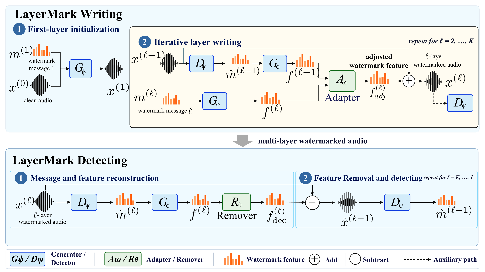
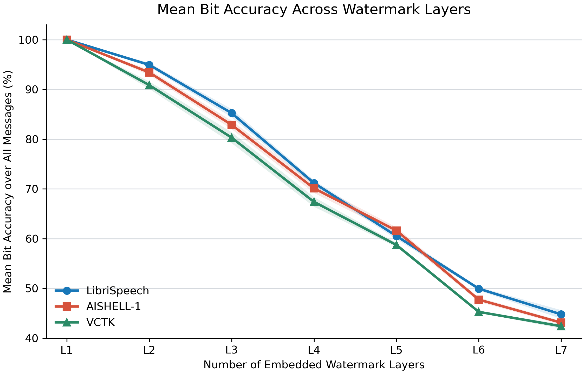

Abstract
Existing audio watermarking methods are primarily designed for single-message embedding, so a newly embedded watermark can overwrite earlier messages. LayerMark introduces a Multi-Layer Adapter to reduce inter-layer feature overlap during writing and a Multi-Layer Remover to progressively expose earlier messages during detection. Across four embedding layers, LayerMark retains multi-message detection while achieving an SNR of 33.62 dB, and it generalizes to unseen speech datasets and common audio transformations.
01 / Method
Overview of LayerMark
The Adapter adjusts each newly generated watermark feature before it is added. During verification, the Remover estimates the visible watermark feature, subtracts it, and repeats to recover earlier messages.

02 / Audio samples
Sequential watermark embedding
Listen to three audio examples before watermarking and after one, two, and three watermark messages are sequentially embedded.
03 / Listening comparison
Comparison with baselines
Each method receives the same original audio. Following the paper notation, E1--E3 denote sequential embedding of one to three watermark messages.
The examples use each method's official released checkpoint and sequentially embed each message into the preceding output. Timbre's stronger degradation at E2 and E3 is retained as produced under this shared protocol.
04 / Results
Layer-wise message recovery
The values below reproduce the multi-layer detection results reported in Table 1 of the paper.
maximum embedding depth, K
SNR
m(1) bit accuracy
m(4) bit accuracy

Multi-layer detection accuracy and audio quality
| Method | m(1) Acc. | m(2) Acc. | m(3) Acc. | m(4) Acc. | SNR |
|---|---|---|---|---|---|
| Timbre | 0.00 | 0.00 | 0.00 | 1.00 | 22.40 |
| AudioSeal | 0.00 | 0.00 | 0.00 | 1.00 | 20.43 |
| WavMark | 0.00 | 0.00 | 0.00 | 1.00 | 27.78 |
| AudioMarkNet | 0.00 | 0.00 | 0.00 | 1.00 | 25.12 |
| LayerMark (Ours) | 0.81 | 0.89 | 0.94 | 1.00 | 33.62 |
Bit accuracy values reproduced from Table 1.
05 / Citation
BibTeX
@inproceedings{yan_layermark,
title = {LayerMark: Multi-Message Audio Watermarking with
Feature Overlap-Aware Embedding and Recursive Detection},
author = {Yan, Zhiheng and Ma, Binhao and Duan, Rui and Guo, Hanqing},
booktitle = {Proceedings of IEEE ICASSP},
year = {forthcoming}
}Publication metadata will be updated after the final proceedings record is available.